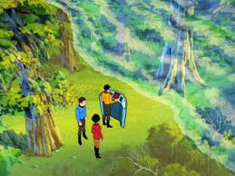
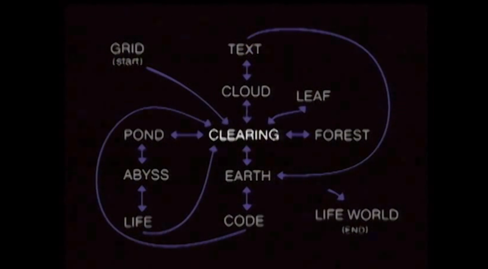

30,000 BCE: From the firelit cave paintings of Lascaux to the birth of painting, architecture, and other arts, we have been attempting to recreate both the world around us and our imagination within.
4thC BCE: Zhuangzi dreams he is a butterfly, but questions if he is a butterfly dreaming he is a man. Are dreams also simulations?

Once Zhuang Zhou dreamed he was a butterfly, a fluttering butterfly. What fun he had, doing as he pleased! He did not know he was Zhou. Suddenly he woke up and found himself to be Zhou. He did not know whether Zhou had dreamed he was a butterfly or a butterfly had dreamed he was Zhou. Between Zhou and the butterfly there must be some distinction. This is what is meant by the transformation of things. During our dreams we do not know we are dreaming. We may even dream of interpreting a dream. Only on waking do we know it was a dream. Only after the great awakening will we realize that this is the great dream.
~380 BCE: Plato likens the uneducated to prisoners in a cave unable to turn their heads. A fire behind them casts shadows of puppets, also behind them, such that all they can see are the puppets' shadows on the wall in front. Such prisoners mistake appearance for reality.

The allegory is intended to show that the names we give for things, to allow us as prisoners to converse about what we see, are in fact names for things that we cannot see, but only grasp with the mind. That is, the real meaning of the words we use is not something that we can ever see with our senses alone. But we can only know this by being liberated from the illusion of the shadows.
1637-1672: René Descartes invents conventions for analytic geometry and algebraic approaches to geometry; for which reason we still describe space in X, Y and Z axes and call this "Cartesian" coordinates. He believed that algebra was a method to automate reasoning.
Descartes also uses methodological skepticism to question his existence and perception, and whether he is dreaming or things are externally real. Influenced by the mechanical automatons of his time, he draws attention to the problem of the connection between body and mind, inadvertently launching a dualism that dominates Western thought thenceforth and remains an influence over and problem of VR.
"VR opens the door to what Jaron Lanier (who coined the term virtual reality in the 1980s) calls “post-symbolic communication”: No longer are we limited to communicating via sequences of symbols represented by audible vibrations of our vocal chords, or produced by our fingers pressing on a series of keys or, more recently, a flat piece of glass. Instead, you experience my dream directly, without having to interpret long strings of verbal or written symbols... The medium, the place where those stories will unfold, exists within our consciousness. We’ll find ourselves having passed through our long-held, precious frames to live within those stories. And we’ll carry the memory of those stories not as content that we once consumed, but as times and spaces we existed within." - source
1800's: The popular wave of massive-scale panorama paintings, often with dedicated buildings, usually depicting landscapes and/or historic events.

At the same time, the first attempts to capture permanent images from camera obscura (themselves inspired by caves...) through chemical means marks the birth of photography.
1838: Sir Charles Wheatstone invents stereoscopic photography
1885/1935: L'Arrivée d'un Train
The train moving directly towards the camera, shot in 1895, was said to have terrified spectators at the first screening, a claim that has been called an urban legend. What many film histories leave out is that the Lumière Brothers were trying to achieve a 3D image even prior to this first-ever public exhibition of motion pictures, and later re-shot the film in stereoscopic 3D, first screened in 1935. Given the contradictory accounts that plague early cinema and pre-cinema accounts, it's plausible that early cinema historians conflated the audience reactions of the 2D and 3D screenings of L'Arrivée d'un Train.
1901: L. Frank Baum, an author, first mentions the idea of an electronic display/spectacles that overlays data onto real life (in this case 'people'), it is named a 'character marker'.
1935: Stanley G. Weinbaum's short story "Pygmalion's Spectacles" describes a goggle-based virtual reality system with holographic recording of fictional experiences, including smell and touch: "You are in the story, you speak to the shadows (characters) and they reply, and instead of being on a screen, the story is all about you, and you are in it."
1939: The ViewMaster stereoscopic device is launched.

1943: Patent filed for a head-mounted stereo TV.
1929-1950s: Link Trainer, a mechanical flight simulator with motion simulation, to be used by over 500,000 pilots.
1950s-60s: The "golden era" of 3D cinema.

1957–62: Morton Heilig, a cinematographer, creates and patents a mechanical simulator called Sensorama with visuals, sound, vibration, and smell.

Heilig later (1960) filed a patent for a multisensory HMD:

"When anything new comes along, everyone, like a child discovering the world, thinks that they've invented it, but you scratch a little and you find a caveman scratching on a wall is creating virtual reality in a sense." - Morton Heilig
1961: Philco Headsight is the first HMD, used for remote camera viewing (CCTV), including head orientation tracking.

1963: Ivan Sutherland's Sketchpad, one of the first interactive graphics program.
Hugo Gernsback (of "Hugo Awards" fame), wearing his TV Glasses in a 1963 Life magazine shoot:

1964: New York inventor and holographer Gene Dolgoff, who is also the inventor of the digital projector, creates a holography laboratory. Dolgoff's obsession with holography included theories of "matter holograms", the holographic nature of the universe, and the holographic nature of the human brain.
1965: Ivan Sutherland pens The Ultimate Display. Ivan E Sutherland, 1965, inspiring everything from the Holodeck to the Matrix.
"The ultimate display would, of course, be a room within which the computer can control the existence of matter. A chair displayed in such a room would be good enough to sit in. Handcuffs displayed in such a room would be confining, and a bullet displayed in such a room would be fatal. With appropriate programming such a display could literally be the Wonderland into which Alice walked."
1968: Ivan Sutherland's Sword of Damocles, widely considered to be the first virtual reality (VR) and augmented reality (AR) head-mounted display (HMD) system. DARPA.

The next twenty years see slow but non-stop development of VR technologies largely within military, industry, and science research institutions, with a slow infiltration into popular culture.
1974: The Holodeck concept appears in Star Trek: the Animated Series, and reappears in 1987 in Star Trek: The Next Generation.

1975: Myron Krueger creates Videoplace to allow users to interact with virtual objects for the first time. Book "Artificial Reality" articulates an artform whose primary material is real-time interaction itself.
1977: Star Wars features a hologram (Leia's message for Kenobi) and some of the first widely-seen 3D computer graphics in film (the Death Star plans).
1978: Aspen Movie Map -- a proto Streetview, interactive via laserdisc, that also had a polygonal mode.

1979: LEEP HMD with lenses designed for very wide field of view.
1980: Steve Mann creates the first wearable computer, a computer vision system with text and graphical overlays on a photographically mediated reality.
Battlezone is the first big 3D vector graphics success in arcade games. Battlezone was thought so realistic that the US Army used it to train tank gunners.

1982: Atari founds a VR research lab
Tron movie
1983: Brainstorm movie.
1984: William Gibson writes Neuromancer, bringing wide acclaim to the cyberpunk genre.
Elite, an open world space trading video game, published by Acornsoft for the BBC Micro and Acorn Electron computers, featuring revolutionary 3D graphics

1985: Jaron Lanier (formerly of the Atari lab) coins the phrase Virtual Reality and creates the first commercial business ("VPL") around virtual worlds.
VR at NASA:
1989: Shadowrun desktop role-playing game in a near-future cyberpunk + VR world
The 90's saw a wave of public interest and hype in VR, which as it grew became often conflated with cybernetics, AI, computer graphics in general, the nascent internet, etc. as cyberspace.
1991: Virtuality company launches with a new multiplayer hardware prototype in several countries -- but at $73,000 per unit! Sega also launches a VR headset for their console.
EVL in Chicago launches the first cubic CAVE VR system. Later commercialized by Mechdyne, WorldViz and others, still actively installing new systems in research labs around the world today.

Retinal display developed, scanning images onto retina, commercialized by Microvision.
Computer Gaming World magazine predicted "Affordable VR by 1994"
ABC Primetime covers the VR scene (from vrtifacts.com):
1992: Neal Stephenson writes Snow Crash
Lawnmower Man movie.
Sega Virtua Racing, and Virtua Fighter (1993) popularized polygonal 3D games.
1994: The first version of Virtual Reality Modeling Language (VRML), a standard for sharing interactive 3D vector graphics on the web, and by 1997 several 3D chat environments exist.
1994: Topological Slide. Michael Scroggins & Stewart Dickson.
Paper: Absolute Animation and Immersive VR.
1995: Maurice Benayoun creates a VR artwork Tunnel under the Atlantic connecting the Pompidou Centre in Paris and the Museum of Contemporary Art in Montreal with 3D modeling, video chat, spatialized sound, and AI.
Strange Days and Johnny Mnemonic movies.

A mini documentary:
The same year was also identified as the 'death of VR'. Nintendo releases VirtualBoy for US$ 180, and discontinues it just six months later. ("Nail in the coffin for 90's VR") A survey by Computerworld magazine in 2007 listed VR as the 7th biggest technology flop in history.
What went wrong?

1996: Quake pioneers play over the Internet first-person shooters.
3dfx Interactive released the Voodoo chipset, leading to the first affordable 3D accelerator cards for personal computers. Within a few years dedicated 3D graphics processing unit cards (GPUs) become essential for most video games, and GPU performance wars rapidly increase real-time 3D rendering capabilities at consumer price levels.
Meanwhile, although VR was still capturing some SF attention and slowly being rediscovered through the web, VR develops mainly in research labs, and steadily continues to grow in big-budget industrial, science & health research, as well as military training, outside the media radar.
"VR was used to visualize oil fields and to visualize machinery to extract oil more efficiently from old fields. Similar things happened in medicine. We understand more about large molecules, we understand more about how the body heals from surgery through VR simulations." - Whatever happened to VR -- interview with Jaron Lainer (2007)
1999: The Matrix and eXistenZ movies.
2001: Grand Theft Auto III released, popularizing 3D open world games with a non-linear style of gameplay
2005: The AlloSphere
Over this period VR also gradually begins to appear on the web.
1999: Entrepreneur Philip Rosedale forms Linden Lab to develop hardware for 360 degree VR, but this soon transforms into a platform for 3D socializing, launching SecondLife in 2003.E.g.

2007: Google Streetview launched.
VR goes into the garage, then goes mainstream again
2009: A teenage Palmer Luckey announces on a BBS post his home-made Oculus "Rift" HMD., and works on it in his parent's garage over the next couple of years.
2012: John Carmack (lead programmer of Doom, Quake, and many other pioneering 3D games) introduces a duct taped head-mounted display based on Luckey's prototype at the Electronic Entertainment Expo. Palmer's company, Oculus VR, launches a Kickstarter campaign to fund the development of the Rift. It is phenomenally successful, raising US$2.4 million for the development of the Rift.
2013: First Oculus Rift developer kit (DK1) ships, for $300. Developer kits are released to give developers a chance to develop content in time for the Rift's release; these have also been purchased by many virtual reality enthusiasts for general usage.
Althrough Luckey mainly considered the HMD a way to play FPS shooters, artists jump on the chance to radically show what else VR could be. A couple of examples from 2013:
Gender Swap is an experiment that uses themachinetobeanother.org/ system as a platform for embodiment experience (a neuroscience technique in which users can feel themselves like if they were in a different body). In order to create the brain ilusion we use the immersive Head Mounted Display Oculus Rift, and first-person cameras. To create this perception, both users have to synchronize their movements. If one does not correspond to the movement of the other, the embodiment experience does not work. It means that both users have to constantly agree on every movement they make. Through out this experiment, we aim to investigate issues like Gender Identity, Queer Theory, feminist technoscience, Intimacy and Mutual Respect.
Also this year: Google announces an open beta test of its Google Glass augmented reality glasses.
2015: SightLine: The Chair, by Frooxius
"This experience is based off the gaze-direction mechanics of the award winning prototype "SightLine", originally developed for the 2013 VR Jam sponsored by Oculus VR and IndieCade."
More than 100,000 Oculus DK2's ($350) had shipped. Oculus VR is acquired by Facebook for $2 billion.
Microsoft announces HoloLens augmented reality headset.
HTC partners with Valve Corporation to develop the HTC Vive headset and controllers, released early 2016.
2016 Announced as "the year of VR"
2017-2018
Industry focus has shifted from hardware to content problems:
Michael Abrash, Chief Scientist, Oculus: "The future of VR lies in the unique experiences that get created in software, and if I knew what those would be, even in broad outline, I would be very happy."
There's huge investment, affordable platforms, ready authoring tools and delivery networks, and proven use cases.
Augmented/Virtual Reality revenue forecast revised to hit $120 billion by 2020

2019-2021
Things slow down a little -- talk of "VR Winter" -- but a steady rollout of new HMDs, as well as phone-based AR, WebVR / WebXR, the huge quantities of the standalone Oculus Quest sold, gradually AAA games, HMDs in workplaces, etc.
(See also The Rise and Fall and Rise of Virtual Reality and Introduction to Virtual Reality)